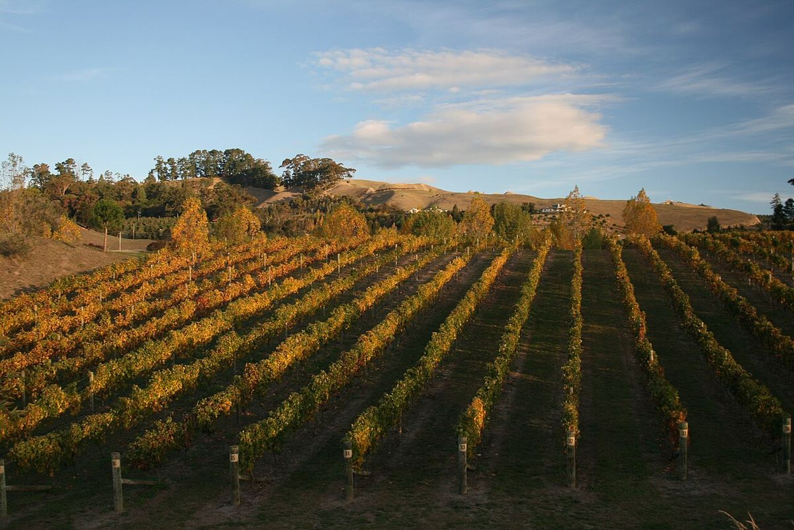

RED
Hawke’s Bay, on the east coast of the North Island, is one of New Zealand’s oldest wine regions and the leading one for Bordeaux-style reds and Syrah.

Winegrowing in Hawke’s Bay dates back to the mid-nineteenth century. In 1851 Marist missionaries planted vines in the region and founded the winery now known as Mission Estate, regarded as the oldest in New Zealand still in operation. In the late nineteenth century several landowners created other estates, among them Te Mata, whose winery is among the oldest in the country. For much of the twentieth century the region produced mainly simple wines, but from the 1980s and 1990s a new generation of producers committed itself to quality reds.
A milestone was the discovery of the potential of the Gimblett Gravels, a former bed of the Ngaruroro river that was exposed after a great flood in the 1860s. This stony land, long considered almost useless for agriculture, was planted with vines from the late 1980s and today gives some of the country’s most highly regarded reds. Producers in the area have created a collective brand to identify wines from this soil.
Hawke’s Bay is one of New Zealand’s warmest and sunniest regions, sheltered from westerly winds by the inland mountain ranges. The climate is maritime and temperate, although autumn rain and occasional cyclones can complicate harvest. Soils are very varied: as well as the Gimblett Gravels, which store heat and drain very well, there is the Bridge Pa Triangle, with alluvial soils of gravel and reddish silt, along with terraces of clay and limestone in the hills and more fertile soils on the coastal plains. Napier and Hastings are the main towns.
Bordeaux-style reds based on Merlot and Cabernet Sauvignon, with Cabernet Franc and Malbec, are the historic speciality: wines with black and red fruit, herbal and cedar notes and fine tannins, in a fresher style than many warm-climate reds. Syrah, usually labelled under that name here rather than as Shiraz, has gained great prestige with spicy wines marked by black pepper and violet. Among the whites, rich, balanced Chardonnay stands out, and Sauvignon Blanc, Pinot Gris and Viognier are also grown. The region is also one of the centres of the country’s fruit production.